A Brief Overview of the Rubin Observatory
Adam Thornton
Created: 2025-09-17 Wed 00:46
A Brief Overview of the Rubin Observatory (2025)
Almost everything I am going to tell you can be found in the Science Book. It's quite dry and a little out of date, but it is the definitive reference for the general scientific community.
The LSST Overview Paper is a good–but still dense–summary of the Science Book.
Lighter-weight resources: Andy Connolly Ted Talk and and LSST Key Numbers.
Images, except when otherwise noted: Rubin Observatory/NSF/AURA
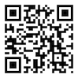
What is the Rubin Observatory?
It is the observatory that will carry out the Legacy Survey Of Space And Time.
It was formerly known as the Large Synoptic Survey Telescope (LSST). The name was changed in late 2019 to honor Vera Rubin.
Rubin performed the first rigorous quantitative work proving that galaxies could not behave as they did if the mass was where the light was, giving firm experimental confirmation of Zwicky's "Dark Matter," hypothesized in 1933.
Since understanding dark matter and dark energy is among the primary purposes of the survey, the renaming of the observatory in her honor was particularly fitting.
Vera Rubin
Vera Rubin, from a full-focal-plane image from the Symonyi Survey Telescope's camera (50 micron aperture).
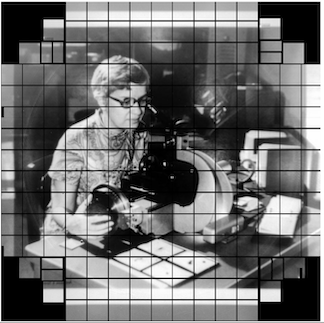
Captured/resized by the author from Stanford's Camera Image Viewer (3.2Gpx to 102Kpx).
New Nomenclature
Quite a bit of what you will find on the Web still talks about "LSST". This will change over time, and we have adopted a more precise set of names for observatory components.
The Observatory as a whole is the "Vera C. Rubin Observatory"; "Rubin Observatory" for short.
The ten-year survey is the "LSST".
The telescope is the "Simonyi Survey Telescope".
Rubin Observatory is funded by NSF, DOE, and many public and private donors.
Please do not call it "VRO". Use "Rubin Observatory" instead.
Where is it?
It's in the Andes foothills, about an hour and a half from La Serena, Chile (57 km), on Cerro Pachón. It is at approximately 2680m elevation.
The Picture Everyone Takes
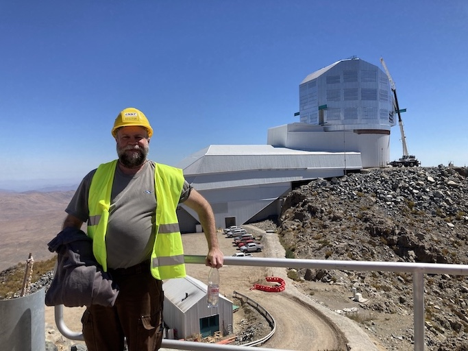
(Picture by Wil O' Mullane, probably)
Observatory and moon, March 2024
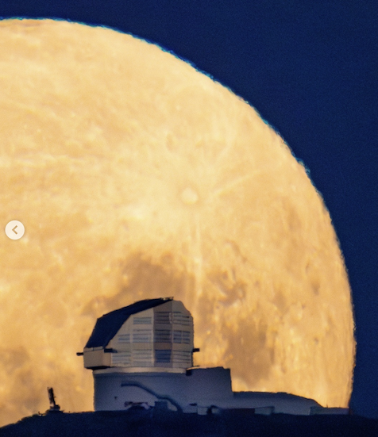
(Hernan Stockebrand)
Observatory with star trails, November 2024

(also Hernan Stockebrand)
Why there?
This location is excellent for optical astronomy (including infrared) for several reasons:
It's in the Atacama Desert, which is extremely dry
8800 feet is much easier for humans to work at than 14,000 (Mauna Kea) but you're still above almost all the water vapor in the air. Expected mean seeing is 0.67" (remember this when we talk about the camera).
Long partnership between United States and Chilean astronomy
First joint observatories were built in the 1960s.
(There was also a lot of Cold War politics involved.)
Lots of existing infrastructure
Gemini South and SOAR are also on Cerro Pachón; it's 10 km from Cerro Tololo (CTIO). So we had power, comms, and a road to the mountain already.
What is the Rubin Observatory's purpose?
The first (and currently the only) mission of the Rubin Observatory is to execute the Legacy Survey Of Space And Time (LSST).
Legacy Survey of Space and Time
The LSST is a ten-year survey of the southern sky. Six bands, from near-ultraviolet to near-infrared (320-1080nm). We will get a complete picture of the Southern sky (in at least one band) every three nights (-ish, dependent on survey cadence). This will enable detection of faint transient phenomena with a much greater degree of completeness than ever before.
How do we do that?
We will make approximately 1000 visits a night, and take a picture of the sky with a 30-second exposure time. Each picture is 3.2 gigapixels. Then we slew the telescope and do it again, all night, every night, for ten years, weather (and other factors) permitting.
When will we do that?
COVID-19 (and its knock-on effects) delayed our schedule quite a lot. We expect to begin science operations late in 2025.
But also we've had our share of other delays, like weather.
July 2022 Blizzard
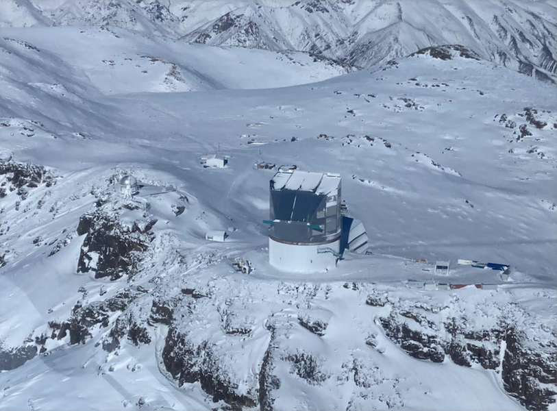
Winter Weather
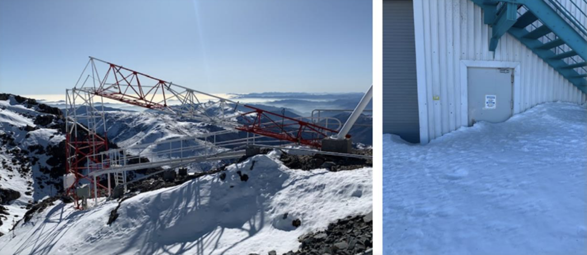
That's the weather station on the left. Bad weather when your weather station falls over.
Plus regular project delays
For example, the camera cooling system was not performing as it should have, and needed significant rework.
What are we doing now at the summit?
- We have a working telescope: starlight to mirrors to camera.
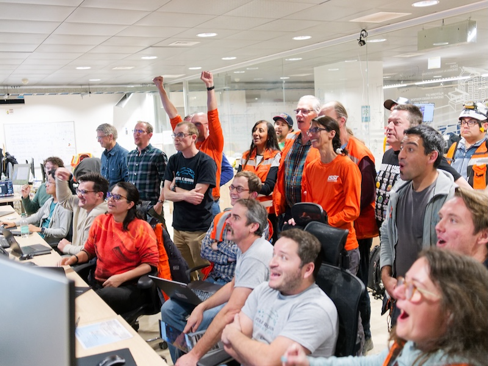
(Credit: RubinObs/NOIRLab/SLAC/DOE/NSF/AURA/W. O'Mullane)
Photos of the sky will be available after First Look, which should be June or July.
What are we doing next at the summit?
- We are currently doing calibration and commissioning.
- We expect to start the survey in late 2025.
Data Volume
We will collect 20-ishTB of pipeline-processed data a night (including calibration data–just images are 15-ishTB). That's equivalent to all the data collected over the Hubble Space Telescope's 30+-year lifetime each week.
We will take over one trillion photometric measurements of astronomical objects.
The reduced catalogue (the primary science product) will be on the order of 15PB: tens of billions of rows, with complex structure, in a database.
The complete data set (with cailbrated exposures, templates, etc.) will approach half an exabyte.
The Symonyi Survey Telescope
The telescope is distinguished by several characteristics, imposed by the requirements of the survey. Chief among these are its compactness and its rigidity, which are necessary to be able to quickly and accurately repoint the telescope a thousand times a night and take a picture without the telescope swaying.
Physical Characteristics
The telescope will make 1000 thirty-second visits a night, with five seconds in between each visit to repoint and damp the telescope.
We have to move it from one location on the sky to another and have it settle in 4.8 seconds for a change of 3.5° elevation and 7° azimuth: 2-ish seconds of motion and 3-ish seconds to settle to 0.1".
In order to be able to move that quickly and settle that fast, the telescope has to be extremely rigid. The whole assembly weighs about 450 tons. The azimuth motors total 400 HP and the elevation motors 50 HP. The rim of the assembly is moving at about 30 mph when we are repointing.
Telescope optical design
This requires a very compact telescope. It is a three-mirror design, where M1 and M3 are part of the same piece of glass.
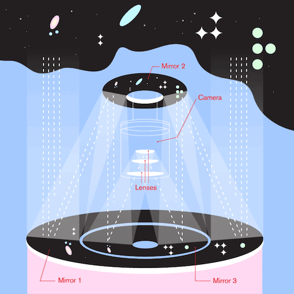
Mirror Construction
The primary mirror is the largest monolithic piece of glass ever constructed and seems likely to remain so given that newer telescope designs mostly use ceramic substrates instead of glass.
M1M3 was built at the Richard F. Caris Mirror Lab under the UA stadium.
M2 was built by Corning in New York.
M1M3 has been silvered
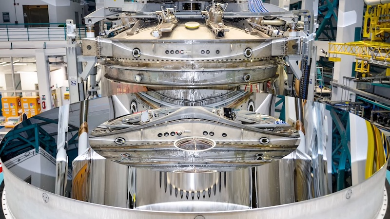
(still from a video on the gallery)
And installed
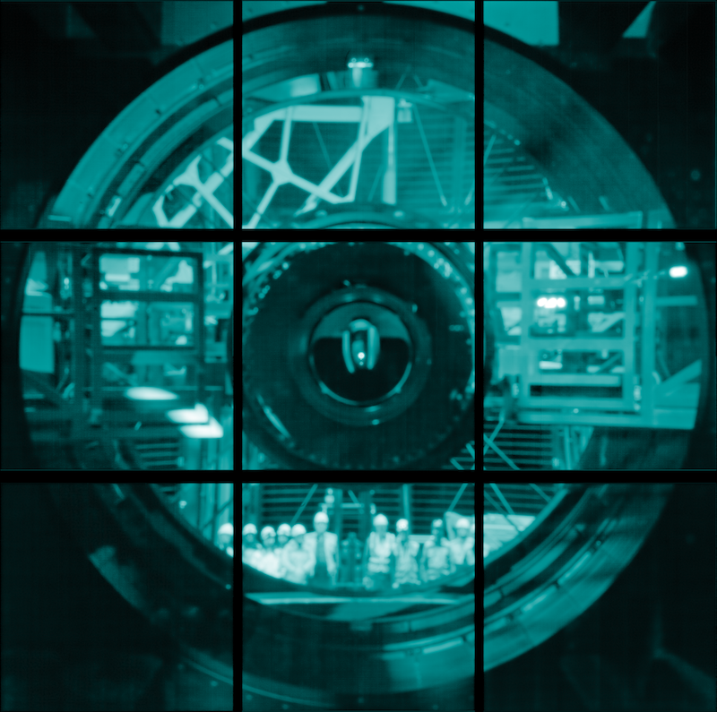
The telescope is really big
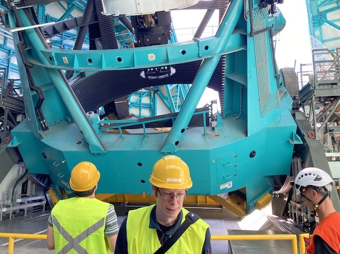
(Picture by Adam Thornton)
How much can it see?
M1M3 is 8.4m diameter. That can collect a lot of photons.
Huge field of view: 3.5°. (JWST is 3.2' or so.) Seven full moons side-by-side, or Orion's belt, or a DVD at arm's length. If you calculate that out, each pixel is about 0.6".
Single-visit depth is magnitude 24.7. Stacked depth (to 5σ detection) over the survey is magnitude 27.5: 30/400 million times fainter than naked eye detection. (The detectors saturate at magnitude 16, and these magnitudes are in our r-band, which is our deepest.)
It will be the deepest ground-based survey telescope.
Étendue
Étendue is the product of field of view and the primary mirror area. It's "how much light can a telescope collect in a given time?" The Simonyi Survey Telescope's étendue is 319 (m°)², more than an order of magnitude more than any other instrument. Hence: wide, fast, deep.
Field of View simulated image
Picture by Nate Lust (Princeton University) with data from the HSC collaboration.
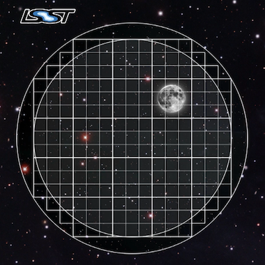
(pointing at the Moon would be really dumb, but not as dumb and dangerous as pointing at the Sun)
Camera design
Currently the largest (in pixel count) digital camera ever made. Made at SLAC. About the physical size of an F-150, but a lot heavier.
3.2 Gpx, in 189 sensors, divided into 21 rafts (plus four wavefront sensor rafts). The first full-focal-plane images were made in September 2020: space.com article, Stanford press release.
How big is 3.2 Gpx?
374 4K HDTVs to display a complete full-resolution image. Assuming a 70" TV, that more or less tiles a basketball court in terms of area.
Obviously the aspect ratios don't work like that, but if you imagine the average pixel density of a 70" HDTV…you need a screen the size of a basketball court to see a full-resolution image.
Remember: about 1000 of those images are produced a night.
Focal Plane
More than two feet wide.
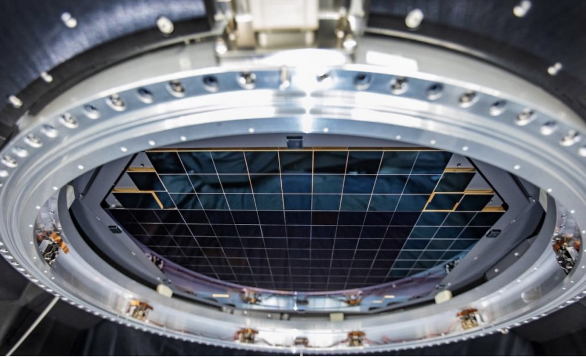
Camera schematic
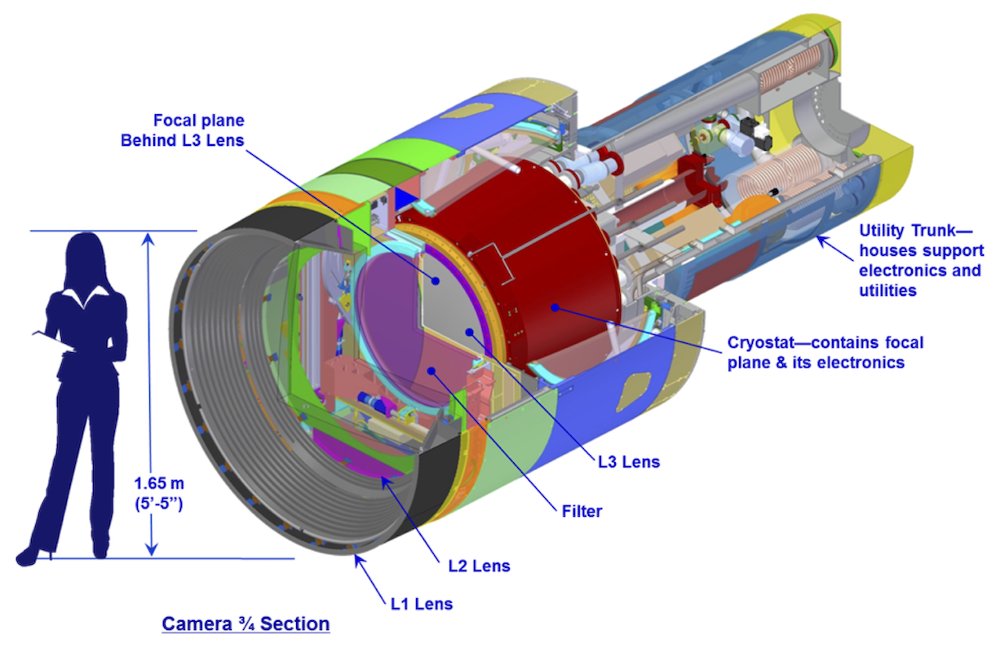
Camera photos
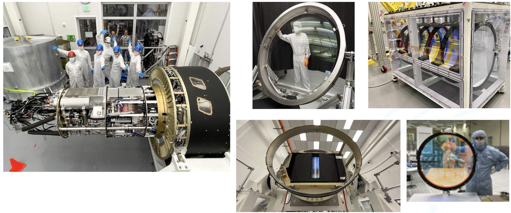
Active optics
We use active optics to sharpen the picture. These are a system of actuators to (on a timescale of about a second) compensate for mirror deformation caused by temperature fluctuations, wind, et cetera.
Not adaptive optics
We cannot use adaptive optics (much higher frequency, order of 100Hz) to compensate for atmospheric distortion as many narrow-field telescopes (such as the ELT, 10 arcminutes) do, because our field of view is large and the air within the cone of sight is nowhere near homogeneous.
Actuators in the mirror cell
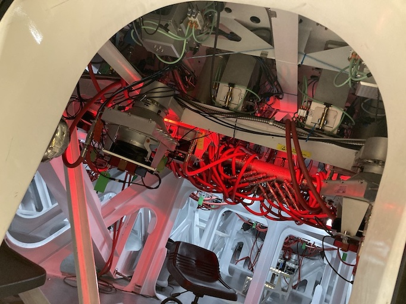
(Picture by Adam Thornton)
Observatory Cost
Total construction cost is somewhere around 700 million 2025 dollars.
- Camera: about $180 million.
- M1M3: about $30 million.
Operations: about $35 million/year (or a dollar a second). About another half-billion over survey lifetime, factoring in commissioning time. Maybe a little more because of inflation.
Grand total, around one and a half billion dollars. Call it 1/30th of a Twitter.
What science will we do with the Rubin Observatory?
There are four major pillars of the LSST research program:
- Comprehensive solar system survey.
- Milky Way structure and stellar content. We should observe about 10 billion stars, mostly within the Milky Way.
- Transient phenomena at optical wavelengths. AGNs, SN1Ae, visual confirmation of LIGO (and other kilonova) detections…
- Dark Energy and Dark Matter. Only 4% of the mass/energy budget of the universe is baryonic matter and EM radiation. What's the rest of it?
Solar System
- Congressional mandate to detect 90% of PHAs: objects 140m diameter or larger by 2028. The LSST is a major component of that. 140m is a regional disaster, not a dinosaur-killer. We expect to find about 100,000 Near Earth Asteroids (not all of them PHAs).
- We also expect to find about 5.5 million Main Belt Asteroids, 280,000 Jovian Trojans, and 40,000 Trans-Neptunian Objects.
- "Deep, Fast, and Wide" is ideal for finding faint small solar system objects that move up to the order of degrees a night.
- Interplanetary coronal mass ejection and its interaction with comets.
Milky Way
- Very low mass stars and brown dwarfs in the local neighborhood.
- Systematic survey of Southern Hemisphere star clusters.
- Roughly 10 billion main sequence stars mapped in our galaxy out to 100kpc, and metallicity over the same volume (because 200 million of those stars will be near turn-off main sequence).
- Much better view of clumps and streams within the Galaxy (bulge and disk) and its halo.
Transient Phenomena
- Much better characterization of Cepheid variables, enabling more precision of the distance ladder.
- Vastly more SN1Ae than observed before, out to the limits of the observable universe.
- Quieter star-death events than SN1Ae: intermediate-mass collapse without remnant ("macronovae"), core-collapse straight to black hole, mergers of exotic objects, disruption by rogue black holes.
- Perfect for optical followup of kilonova events. LIGO: "it's over there somewhere"; we have a picture of "over there" (assuming Southern Hemisphere) every three days.
Dark Matter
- We will observe a great many quasars, many of which will be gravitationally lensed by intervening galaxies: the six bands make it possible to precisely measure the delay between lensed images. That in turn gives us a picture of the mass in the lensing galaxy, which tells us where the dark matter is.
- Weak (statistical) lensing at cosmological scale: galaxies are, presumably, oriented randomly with respect to us, with no bias. So if in a (large) region, we see that more appear elliptical in one direction than in another, we can infer the existence of a lens, and therefore mass, between us and them.
Dark Energy
- The improvements in the distance ladder from lensing and SN1ae can let
us constrain the Hubble
ConstantParameter's value (and its evolution over time, whichis presumed to be a linear function ofproper distanceDESI has just (April 2024, further confirming evidence March 2025) made more complicated) more precisely. That will let us rule out some dark energy theories. - Time's one thing. If the Hubble Parameter is not (statistically) constant in all directions at a given proper distance…
A few mind-blowing numbers
We should detect 10 to 40 million AGNs (quasars) over the survey lifetime.
300,000 supernovae per year. Current rate, across all instruments, is about 7000 a year. One supernova goes off in a Milky Way-sized galaxy every few dozen years. One explodes in the observable universe once every ten seconds.
About 10 billion galaxies, and about 10 billion stars. So everyone can have one of each, with plenty to spare.
If I did my math right, the linear distance spanned by a pixel (0.6") at the limit of the observable universe (comoving distance: 46.1 billion light years) is about 134,000 light years. So a Milky Way-sized structure in the early universe would just about span a pixel in our detector. Except that it's really more complicated than that because of the stretching of spacetime, but you get the idea.
Who gets to use this?
- All astronomers affiliated with US or Chilean institutions. (In practice, anyone with such an affiliation.)
- All astronomers affiliated with institutions that have data rights obtained through in-kind contributions (labor, software, et cetera).
- Their collaborators.
- But two years after initial publication to data rights holders, everyone. (Up to four years after collection: it takes one year for processing, so if data is collected early 2026, it won't be published to data rights holders as part of the catalogue until the end of 2027, and won't be released to the general public until the end of 2029.)
Data availability
There are three kinds of Data Products that will come out of the survey: images, catalogues, and alerts. These fall into three data Product categories: Prompt, Data Release, and User-Generated.
Prompt Products
Prompt products are alerts (plus bundled catalogue and image data): something has changed significantly relative to its historical brightness or position. We have to issue these within 60 seconds of the shutter closing, and they can be consumed by anyone with data rights. We've kept this simple: anything that is present, and wasn't before, or isn't, and was before, with a certainty of 5σ (that is, p-value of 1 in 3.5 million), done with an image-subtraction algorithm.
Prompt product volume
It's an enormous firehose: on the order of 10 million alerts a night. (So, statistically, three of those will just be very unlucky noise, not real events!) There will therefore be community-supplied brokers (seven have been selected, plus two more downstream of those) that filter the Rubin-provided stream with further processing to determine what class of event an alert is, and pass selected alerts downstream. Those will not have sub-minute latency.
Data Releases
Data Releases are our annual catalogues. Each year, we have to reprocess all the data collected thus far, in order to get our coadded (stacked) data correct. This process will take all year. Once published, this too is immediately available to people with data rights, and two years later for the public.
Alerts and Data Releases are, of course, mostly automated, and the source code for their production will be publicly available. (As is the source code for everything we do except a few proprietary telescope components.)
User Generated Products
User generated products are things derived from the first two categories to support particular science goals. This is generally "what I'm writing the paper about" and will usually remain proprietary to the group producing the research.
EPO
Education and Public Outreach will be coordinating curricula (from middle school to college astronomy courses) and organizing citizen science projects (think Zooniverse). As someone interested in the project who is not a professional astronomer, I sympathize with their aims.
What's my role in all this?
I work in the Science Quality and Reliability Engineering (SQuaRE) team, within the Data Management organization of the Rubin Observatory.
My particular focus has mostly been the interactive notebook aspect of the Science Platform. That was envisioned for quick hypothesis-investigation for scientists, but it's now spread into the dome, where it's being used for instrument control, among other things.
I also have been working on monitoring and telemetry for the Science Platform framework. This is derived from the Engineering Facilities Database we built for the components in the dome; we can leverage this work to keep track of the health and performance of internal components of our Science Platform, too.
How did I get here?
I have worked in IT as a system administrator, software developer, consultant, software engineer, and many other roles, for more than 35 years.
Unsolicited Avuncular Advice: find a job doing something you like, because it's much easier to get good at something you enjoy than something you hate.
Neither of my degrees are in scientific or engineering fields.
I have never taken an astronomy course.